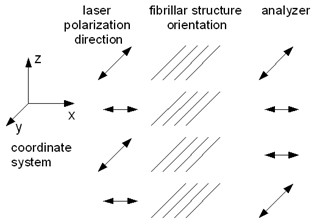
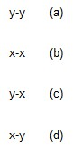
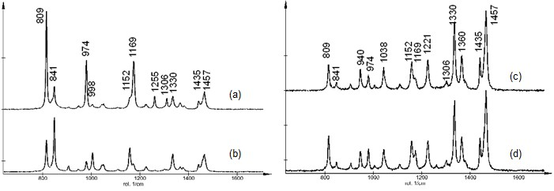

|
偏振
|
在大多数情况下，拉曼光谱的测量无需特别注意入射激光的偏振方向或散射光的额外分析。然而，当涉及选择规则时，拉曼光谱中光的偏振就变得更加重要。使用偏振光，拉曼光谱将只具有某些拉曼活性模式，通过旋转偏振方向，其他模式变得可及。
振动模式的对称性在振动光谱中非常重要。在拉曼光谱测量中，可以通过使用偏振光将对称模式与其他模式区分开来。通过这种方式，可以获得关于样品/分子内对称性的信息。
系统要求：
拉曼偏振研究
偏振拉曼光谱使用偏振激光激发和一个检偏器，通常用于采集与激发激光平行或垂直的光谱。由此产生的光谱信息可以洞察分子取向和振动对称性。本质上，它允许用户获得与分子形状相关的有价值信息，例如在合成化学或多晶型分析中，并且最常用于理解分子在有序环境（如晶格、液晶和聚合物样品）中的取向。
平行和垂直分量的峰强度之比称为退偏比，可以通过以下方程获得，其中 ⊥ 表示激发和拉曼分析偏振器相互垂直取向时的峰强度， || 表示平行取向。
ρ = I⊥/I|| 或 I退偏/I偏振
如果特定峰的 ρ 小于0.75，则该峰来自全对称振动模式。该峰/振动称为偏振带。非对称模式的退偏比大于0.75，这些称为退偏带。
图1和图2展示了单轴等规聚丙烯的平行和垂直光谱。显然，某些峰是高度偏振的，并根据偏振器取向显示出峰强度的显著差异。


图1：激光偏振相对于取向结构的示意图以及相应的检偏器位置。

图2：在四种可能的偏振配置下从等规聚丙烯采集的偏振依赖拉曼光谱。
为旋转激发激光的偏振光，可以使用半波延迟片。四分之一波延迟片能够将线偏振光变为圆偏振光。这些波片需要与所使用的激发波长相匹配。